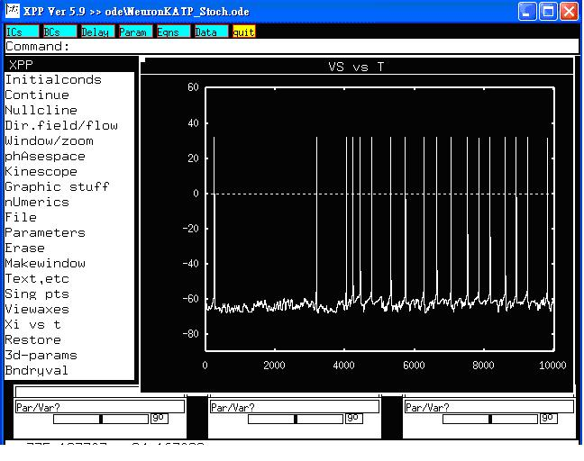

This is the readme.txt for the model associated with the paper Huang CW et al. Glucose and hippocampal neuronal excitability: role of ATP-sensitive potassium channel. J Neurosci Res 2007, [Epub ahead of print] Abstract: Hyperglycemia-related neuronal excitability and epileptic seizures are not uncommon in clinical practice. However, their underlying mechanism remains elusive. ATP-sensitive K(+) (K(ATP)) channels are found in many excitable cells, including cardiac myocytes, pancreatic beta cells, and neurons. These channels provide a link between the electrical activity of cell membranes and cellular metabolism. We investigated the effects of higher extracellular glucose on hippocampal K(ATP) channel activities and neuronal excitability. The cell-attached patch-clamp configuration on cultured hippocampal cells and a novel multielectrode recording system on hippocampal slices were employed. In addition, a simulation modeling hippocampal CA3 pyramidal neurons (Pinsky-Rinzel model) was analyzed to investigate the role of K(ATP) channels in the firing of simulated action potentials. We found that incremental extracellular glucose could attenuate the activities of hippocampal K(ATP) channels. The effect was concentration dependent and involved mainly in open probabilities, not single-channel conductance. Additionally, higher levels of extracellular glucose could enhance neuropropagation; this could be attenuated by diazoxide, a K(ATP) channel agonist. In simulations, high levels of intracellular ATP, used to mimic increased extracellular glucose or reduced conductance of K(ATP) channels, enhanced the firing of action potentials in model neurons. The stochastic increases in intracellular ATP levels also demonstrated an irregular and clustered neuronal firing pattern. This phenomenon of K(ATP) channel attenuation could be one of the underlying mechanisms of glucose-related neuronal hyperexcitability and propagation. ---------------- To run the models: XPP: start with the command xpp ode\NeuronKATP_Stoch.ode select Initialconds -> Go This simulation will make graphs similar to figure 6A in the paper or Neuron_Figure.jpg:  Bard Ermentrout's website http://www.pitt.edu/~phase/ describes how to get and use xpp. These model files were submitted by: Drs. Sheng-Nan Wu and Ching-Wei Huang National Cheng Kung University Medical Center Tainan 70101, Taiwan snwu@mail.ncku.edu.tw